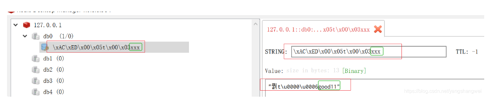
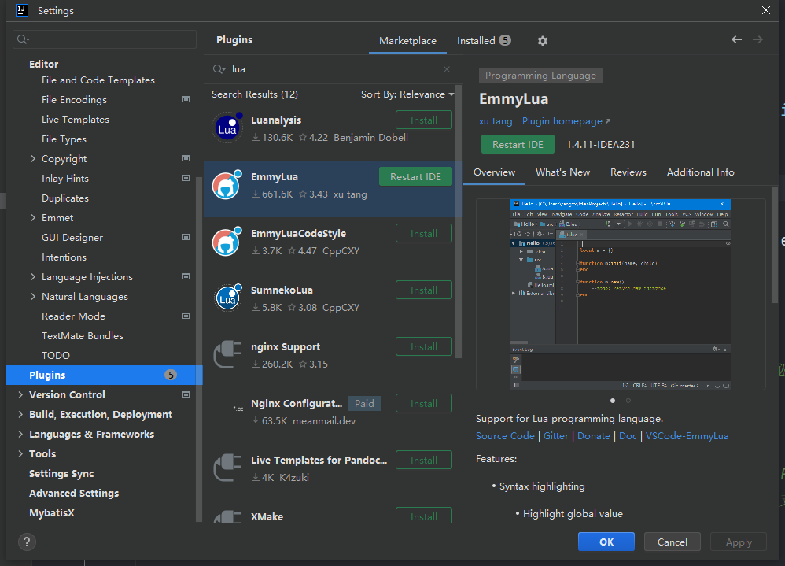
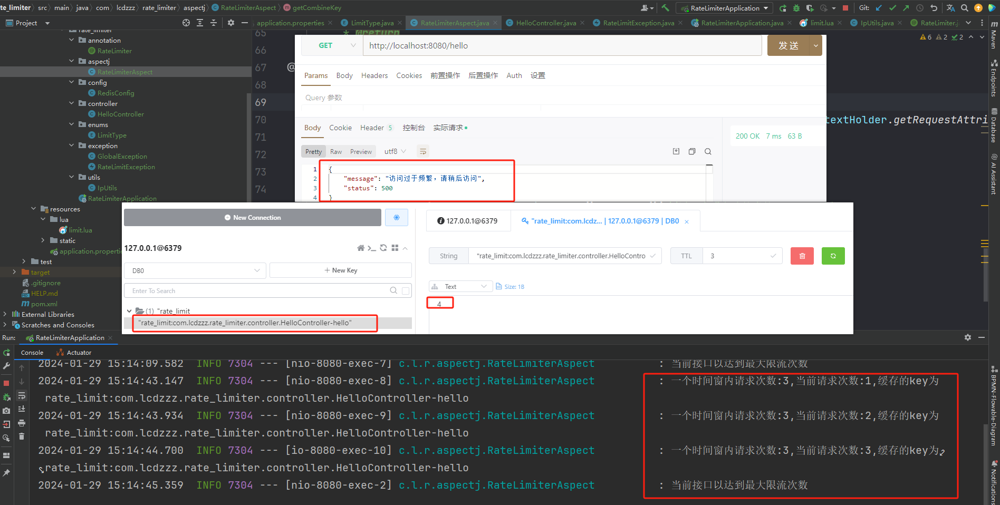
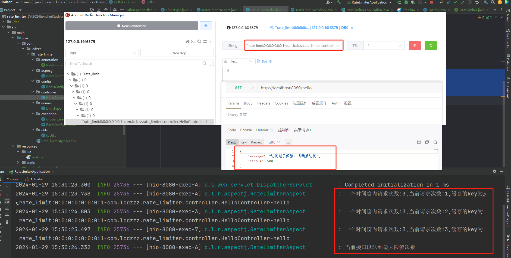

自定义限流注解
依赖
依赖：springweb、nosql的redis、aop
<dependency>
<groupId>org.springframework.boot</groupId>
<artifactId>spring-boot-starter-data-redis</artifactId>
</dependency>
<dependency>
<groupId>org.springframework.boot</groupId>
<artifactId>spring-boot-starter-web</artifactId>
</dependency>
<dependency>
<groupId>org.springframework.boot</groupId>
<artifactId>spring-boot-starter-aop</artifactId>
</dependency>application.properties：
spring.redis.host=localhost
spring.redis.port=6379准备工作
step1：限流类型
package com.lcdzzz.rate_limiter.enums;
/**
* 限流的类型
*/
public enum LimitType {
/**
* 默认的限流策略，针对某一个接口进行限流
*/
DEFAULT,
/**
* 针对某一个IP进行限流
*/
IP
}
step2：定义注解
package com.lcdzzz.rate_limiter.annotation;
import com.lcdzzz.rate_limiter.enums.LimitType;
public @interface RateLimiter {
/**
* 限流的key，主要是指前缀
* @return
*/
String key() default "rate_limit";
/**
* 限流时间窗
* @return
*/
int time() default 60;
/**
* 在时间窗内的限流次数
* @return
*/
int count() default 100;
/**
* 限流类型
* @return
*/
LimitType limitType() default LimitType.DEFAULT;
}step3：配置redis
原因
因为待会去操作限流时需要lua表达式，所以先要对redis进行简单的配置
【问】
为什么要对redis进行配置？
【答】
在springDataRedis里面提供了两个我们可以直接操作redis的类：
RedisTemplate、StringRedisTemplate。区别在于前者的key和value可以操作对象，而后者不可以是对象（只能是字符串）。
但是！虽然说
RedisTemplate更方便，但是也存在问题。它的序列化方案是org.springframework.data.redis.serializer.JdkSerializationRedisSerializer。有兴趣深入了解的可以看https://cloud.tencent.com/developer/article/1863347 这篇博客。同时，想要用其他的序列化方式，也可以看这篇。以下简单来说
假如我加入一个 key：xxx value：good11
那它存入redis里面的就是

虽然在get时，如果依然用的是RedisTemplate，那它自己会帮忙转回去，但是如果用redis命令行去get xxx，那是行不通的。
办法
所以！！！要修改的它的序列化方案，用JSON的，java代码如下
package com.lcdzzz.rate_limiter.config;
import org.springframework.context.annotation.Bean;
import org.springframework.context.annotation.Configuration;
import org.springframework.data.redis.connection.RedisConnectionFactory;
import org.springframework.data.redis.core.RedisTemplate;
import org.springframework.data.redis.serializer.Jackson2JsonRedisSerializer;
@Configuration
public class RedisConfig {
@Bean
RedisTemplate<Object, Object> redisTemplate(RedisConnectionFactory redisConnectionFactory) {
// 创建 RedisTemplate 对象
RedisTemplate<Object, Object> template = new RedisTemplate<>();
// 设置 RedisConnection 工厂。 它就是实现多种 Java Redis 客户端接入的秘密工厂
template.setConnectionFactory(redisConnectionFactory);
/**
* org.springframework.data.redis.serializer.GenericJackson2JsonRedisSerializer
* 使用 Jackson 实现 JSON 的序列化方式，并且从 Generic 单词可以看出，是支持所有类。
*/
//各种序列化的方案。实际线上场景，还是使用 JSON 序列化居多。
Jackson2JsonRedisSerializer<Object> serializer = new Jackson2JsonRedisSerializer<>(Object.class);
//设置key的序列化
template.setKeySerializer(serializer);
template.setHashKeySerializer(serializer);
//设置value的序列化
template.setValueSerializer(serializer);
template.setHashValueSerializer(serializer);
return template;
}
}
step4：lua脚本
插件

简说lua脚本
到时候会传入两个参数进来
- 传key：这个key就是一个list集合，就是可能传多个key进来
- 传多个参数进来，多个参数也是数组
--注意，这里的下标是从1开始的，而不是0。
--以下的意思：一会把KEYS数组里面的第一项拿出来，交给key这个变量
--tonumber是把字符串转成数字
local key = KEYS[1]
local time =tonumber(ARGV[1])
local count=tonumber(ARGV[2])
--[[当看到这行Lua脚本时，可以理解为它是用在Redis数据库上的脚本。让我们逐步解释这行代码：
1. local current: 这行声明了一个本地变量 current。
在Lua中，local 关键字用于声明局部变量，其作用范围仅限于当前代码块。
2. redis.call('get', key): 这是一个Redis命令，用于执行Redis数据库的GET操作。
具体来说，它是通过Lua脚本中的 redis.call 函数来调用Redis命令的。
在这里，'get' 是Redis的GET命令，而 key 是作为参数传递给GET命令的键。
所以，整体而言，这行代码的目的是从Redis数据库中获取键为 key 的值，
并将其存储在本地变量 current 中。在这之后，你可以通过对 current 变量的操作来处理从Redis中获取的值。
例如，你可能会检查是否成功获取了值，然后进行相应的逻辑处理。
]]
--这里的key，就是当前要限流的那一个接口，其存在redis里面的那个key，把它先拎出来，放进current变量中
local current=redis.call('get',key)
--但是如果这个key没有调用过，那么这个current没有值。比如第一次调用这个接口，那么current是会不存在的。所以下面还要做一个判断
if current and tonumber(current)>count then--[[意思是current存在，并且它的值大于count。说明已经超过限流的阈值了]]
return tonumber(current)
end--[[否则就是current没有值，意味着是第一次访问]]
current=redis.call('incr',key)--[[给current自增1。因为有可能存在并发操作，所以不能用set操作，用incr会更准确一些]]
--但是在并发环境下，有可能另外一个操作也执行了current自增1的操作，所以以下需要判断，即如果对方已经设置过过期时间了，那我们就不需要多次一举了
if tonumber(current)==1 then--[[等于1代表还没有其他的进程操作过current]]
redis.call('expire',key,time)--[[设置过期时间]]
end
return tonumber(current)--[[最后我们需要在java代码中看current的值，判断是否需要限流/放行]]step5：加载lua脚本
上一步写的lua脚本是需要加载的，springDataRedis中也为加载lua脚本提供了方法，只要定义一个bean就行了，如下
package com.lcdzzz.rate_limiter.config;
import org.springframework.context.annotation.Bean;
import org.springframework.context.annotation.Configuration;
import org.springframework.core.io.ClassPathResource;
import org.springframework.data.redis.connection.RedisConnectionFactory;
import org.springframework.data.redis.core.RedisTemplate;
import org.springframework.data.redis.core.script.DefaultRedisScript;
import org.springframework.data.redis.serializer.Jackson2JsonRedisSerializer;
import org.springframework.scripting.support.ResourceScriptSource;
@Configuration
public class RedisConfig {
@Bean
RedisTemplate<Object, Object> redisTemplate(RedisConnectionFactory redisConnectionFactory) {
// 创建 RedisTemplate 对象
RedisTemplate<Object, Object> template = new RedisTemplate<>();
// 设置 RedisConnection 工厂。 它就是实现多种 Java Redis 客户端接入的秘密工厂
template.setConnectionFactory(redisConnectionFactory);
/**
* org.springframework.data.redis.serializer.GenericJackson2JsonRedisSerializer
* 使用 Jackson 实现 JSON 的序列化方式，并且从 Generic 单词可以看出，是支持所有类。
*/
//各种序列化的方案。实际线上场景，还是使用 JSON 序列化居多。
Jackson2JsonRedisSerializer<Object> serializer = new Jackson2JsonRedisSerializer<>(Object.class);
//设置key的序列化
template.setKeySerializer(serializer);
template.setHashKeySerializer(serializer);
//设置value的序列化
template.setValueSerializer(serializer);
template.setHashValueSerializer(serializer);
return template;
}
//这个bean是一个泛型，这里的泛型对应的是返回数据的类型
@Bean
DefaultRedisScript<Long> limitScript(){
DefaultRedisScript<Long> script = new DefaultRedisScript<>();
script.setResultType(Long.class);//返回的类型
/*以下这行代码看起来是用于设置Lua脚本的源代码。让我们逐步解释：
1. new ClassPathResource("lua/limit.lua"): 这部分创建了一个 ClassPathResource 对象，
该对象用于表示类路径下的资源。在这里，"lua/limit.lua" 是资源的路径，
这意味着要在类路径下找到名为 limit.lua 的Lua脚本文件。
2. new ResourceScriptSource(...): 这部分创建了一个 ResourceScriptSource 对象，
用于表示脚本的源代码来源。ResourceScriptSource 通常用于从文件、URL等资源加载脚本。
3. script.setScriptSource(...): 这部分应该是将创建好的脚本源代码对象设置到某个脚本对象中。
根据命名和上下文来看，可能是设置到一个名为 script 的Lua脚本对象中。
综合起来，这行代码的作用是将位于类路径下的 lua/limit.lua 文件的Lua脚本设置为某个脚本对象
（可能是 script）的源代码。这样做的目的是为了后续执行该脚本时能够使用该源代码。*/
script.setScriptSource(new ResourceScriptSource
(new ClassPathResource("lua/limit.lua")));/*告诉spring我的脚本搁哪呢*/
return script;
}
}
step6：自定义异常
@RestControllerAdvice 是Spring Framework中的注解，用于定义一个全局性的异常处理器（Global Exception Handler）。
在Spring应用中，@RestControllerAdvice 通常用于集中处理所有控制器（Controller）中抛出的异常。它的主要作用包括：
- 全局异常处理： 允许开发者定义一个全局的异常处理逻辑，捕获并处理整个应用中的异常，而不仅仅是在单个控制器中。这有助于提高代码的一致性和可维护性。
- 统一响应： 可以在全局异常处理器中定义统一的响应格式，使得应用的异常返回给客户端时具有一致的结构和格式。
- 异常日志记录： 可以在全局异常处理器中集中处理异常的日志记录，方便监控和排查问题。
一个简单的例子如下：
javaCopy code@RestControllerAdvice
public class GlobalExceptionHandler {
@ExceptionHandler(Exception.class)
public ResponseEntity<String> handleException(Exception e) {
// 处理异常逻辑
// 可以返回自定义的错误信息
return ResponseEntity.status(HttpStatus.INTERNAL_SERVER_ERROR).body("Internal Server Error");
}
// 其他异常处理方法可以继续添加
}在上述例子中，@ExceptionHandler 注解用于指定处理的异常类型，这里是 Exception.class，表示处理所有类型的异常。然后，定义了一个处理异常的方法 handleException，在这个方法中可以实现自定义的异常处理逻辑。在实际应用中，可以根据需要添加更多的 @ExceptionHandler 方法来处理不同类型的异常。
此项目中，全局异常处理如下：
package com.lcdzzz.rate_limiter.exception;
import org.springframework.web.bind.annotation.ExceptionHandler;
import org.springframework.web.bind.annotation.RestControllerAdvice;
import java.util.HashMap;
import java.util.Map;
@RestControllerAdvice
public class GlobalException {
@ExceptionHandler(RateLimitException.class)
public Map<String,Object> rateLimitException(RateLimitException e){
HashMap<String, Object> map = new HashMap<>();
map.put("status",500);
map.put("message",e.getMessage());
return map;
}
}自定义的异常如下：
package com.lcdzzz.rate_limiter.exception;
public class RateLimitException extends Exception {
public RateLimitException(String message) {
super(message);
}
}至此准备工作算是完成了，接下来就可以去写切面，去解析注解
定义切面
IpUtils
请看：https://lcdzzz.github.io/2022/04/26/java-chang-yong-util-gong-ju-lei/
RateLimiterAspect
package com.lcdzzz.rate_limiter.aspectj;
import com.lcdzzz.rate_limiter.annotation.RateLimiter;
import com.lcdzzz.rate_limiter.enums.LimitType;
import com.lcdzzz.rate_limiter.exception.RateLimitException;
import com.lcdzzz.rate_limiter.utils.IpUtils;
import org.aspectj.lang.JoinPoint;
import org.aspectj.lang.annotation.Aspect;
import org.aspectj.lang.annotation.Before;
import org.aspectj.lang.reflect.MethodSignature;
import org.slf4j.Logger;
import org.slf4j.LoggerFactory;
import org.springframework.beans.factory.annotation.Autowired;
import org.springframework.data.redis.core.RedisTemplate;
import org.springframework.data.redis.core.script.RedisScript;
import org.springframework.stereotype.Component;
import org.springframework.web.context.request.RequestContextHolder;
import org.springframework.web.context.request.ServletRequestAttributes;
import java.lang.reflect.Method;
import java.util.Collections;
@Aspect
@Component
public class RateLimiterAspect {
private static final Logger logger = LoggerFactory.getLogger(RateLimiterAspect.class);
@Autowired
RedisTemplate<Object, Object> redisTemplate;
@Autowired
RedisScript<Long> redisScript;
//@Before 用于定义前置通知，即在目标方法执行前执行的代码。
/* "@annotation(rateLimiter)": 这是一个切点表达式，它指定了在被 rateLimiter 注解标注的方法上执行切面逻辑。
@annotation 是一个用于匹配带有特定注解的方法的切点函数，
其中 rateLimiter 是一个注解的名字，用于匹配使用该注解的方法。*/
@Before("@annotation(rateLimiter)")//到时候加了@rateLimiter注解的方法，通通都会被洒家拦截下来
public void before(JoinPoint jp, RateLimiter rateLimiter) throws RateLimitException{
int time = rateLimiter.time();
int count = rateLimiter.count();
String combineKey = getCombineKey(rateLimiter, jp);
//Collections.singletonList 是 Java 中 Collections 类提供的一个静态方法，用于创建包含单个元素的不可变列表（List）
try {
Long number = redisTemplate.execute(redisScript, Collections.singletonList(combineKey), time, count);
//根据number的值去判断发生啥事了
if (number==null||number.intValue()>count){
//超过阈值，需要限流
logger.info("当前接口以达到最大限流次数");
throw new RateLimitException("访问过于频繁，请稍后访问");
}
logger.info("一个时间窗内请求次数:{},当前请求次数:{},缓存的key为{}",count,number,combineKey);
} catch (Exception e) {
throw e;
}
}
/**
* 这个key其实就是接口调用次数缓存在redis里面的key
* 如果基于ip限流，那combineKey就会形如：rate_limit:127.0.0.1-com.lcdzzz.rate_limiter.controller.HelloController-hello
* 如果不基于ip限流，那combineKey就会形如：rate_limit:com.lcdzzz.rate_limiter.controller.HelloController-hello
*
* @param rateLimiter
* @param jp
* @return
*/
private String getCombineKey(RateLimiter rateLimiter, JoinPoint jp) {
StringBuffer key = new StringBuffer(rateLimiter.key());
if (rateLimiter.limitType() == LimitType.IP) {//意思是限流的类型是基于ip限流
key.append(IpUtils.getClientIp(((ServletRequestAttributes) RequestContextHolder.getRequestAttributes()).getRequest()))
.append("-");
}
MethodSignature signature = (MethodSignature) jp.getSignature();
Method method = signature.getMethod();
key.append(method.getDeclaringClass().getName())//返回声明方法的类的 Class 对象
.append("-")
.append(method.getName());
return key.toString();
}
}
测试
不限制ip地址
controller层
import com.lcdzzz.rate_limiter.annotation.RateLimiter;
import org.springframework.web.bind.annotation.GetMapping;
import org.springframework.web.bind.annotation.RestController;
/**
* @RestController 注解告诉 Spring 框架，这个类的每个方法的返回值都直接作为 HTTP 响应体返回给客户端，
* 而不是通过视图解析器来解析成视图。因此，@RestController 通常用于构建 RESTful Web 服务，
* 其中控制器的方法返回 JSON、XML 等数据格式而不是 HTML 视图。
*/
@RestController
public class HelloController {
@GetMapping("/hello")
/**
* 限流，10秒之内，这个接口可以访问三次
*/
@RateLimiter(time = 10,count=3)
public String hello(){
return "hello";
}
}结果

限制ip地址
controller层
@RateLimiter(time = 10,count=3,limitType = LimitType.IP)
public String hello(){
return "hello";
}结果

对标tienchin/ruoyi
tienchin-common/src/main/java/com/lcdzzz/common/annotation/RateLimiter.java自定义注解tienchin-common/src/main/java/com/lcdzzz/common/annotation/RateLimiter.java切面，解析注解tienchin-framework/src/main/java/com/lcdzzz/framework/config/RedisConfig.java序列化+限流脚本不同点：ruoyi是拼接字符串，而上面的方法是用lua脚本，但殊途同归